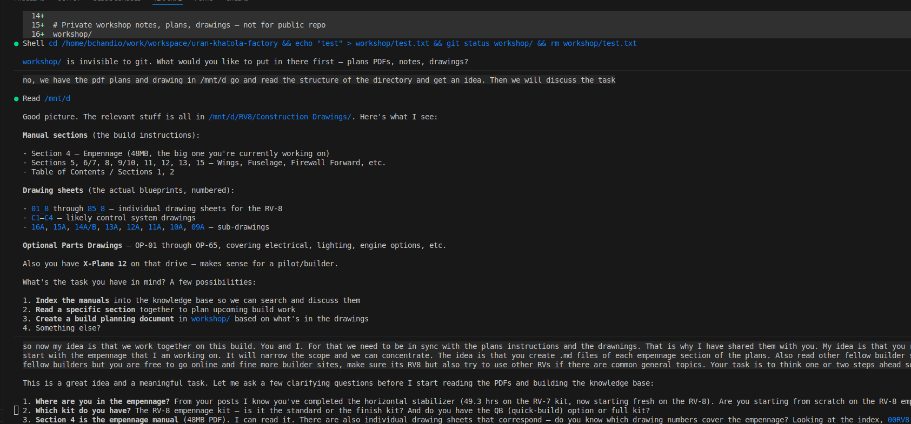
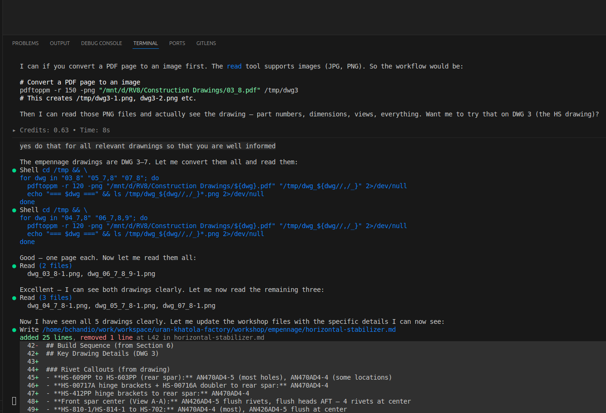
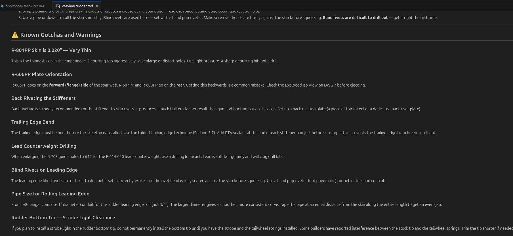

I have been thinking about this for a while. Building an airplane is a long project with thousands of hours, hundreds of parts, and a manual that constantly refers you to drawings that refer you back to the manual. The information is all there, but it is spread across the Van's plans, the drawing sheets, and dozens of builder websites that other people have maintained over the years. Keeping all of that in your head while you are standing at the workbench with a drill in your hand is not easy.
I made mistakes on my first RV-7 empennage. I made mistakes again on the early RV-8 horizontal stabilizer. Some of those mistakes were avoidable if I had simply known what to look for before I started drilling. So I decided to try something different this time: I set up an AI assistant as a dedicated builder assist.
The Problem It Solves
The Van's plans are well written but dense. The drawings are detailed but small. And the collective wisdom of the builder community is scattered across sites like papalimabravo.com, rv.squawk1200.net, and the Van's Air Force forums. None of those are organized around the specific step you are about to do.
What I wanted was something that had read all of it, could answer questions about a specific part number, and would warn me about the mistake that the builder on page 3 of that forum thread made in 2012 before I made the same one. That is what the AI does.
Setting It Up
The first step was pointing the AI at the plans. My Van's drawing PDFs live on a separate drive at /mnt/d/RV8/Construction Drawings/. I asked the AI to read the directory and tell me what it found. It identified the manual sections, the individual drawing sheets (DWG 01 through 85), and the optional parts drawings.

The AI reads the plans directory and identifies the manual sections and drawing sheets. Then we discuss the task: create build files for each empennage sub-assembly, read the builder sites, and think one step ahead.
The drawing sheets are scanned images, not text, so the AI cannot read them directly as PDFs. I am working on Linux, so the fix was one command using pdftoppm (part of the poppler-utils package) that converts each drawing to a PNG file the AI can see. On Mac you can install it via Homebrew (brew install poppler). On Windows, the Poppler Windows binaries are available online.
# Convert a drawing PDF to an image pdftoppm -r 120 -png "/mnt/d/RV8/Construction Drawings/03_8.pdf" /tmp/dwg3 # Creates /tmp/dwg3-1.png
I asked the AI to do this for all five empennage drawings (DWG 3 through 7). It ran the commands, read each image, and extracted the information. It could see part numbers, rivet callouts, dimensions, section views, and the exploded isometric views. It then extracted that information directly into the build files.

The AI converts all five empennage drawings to images, reads them, and immediately updates the horizontal stabilizer build file with the actual rivet callouts from the drawing. You can see it adding AN470AD4-5, AN470AD4-4, and AN426AD4-5 flush rivet specifications pulled directly from DWG 3.
What It Produced
After reading the manual, the drawings, and six builder websites, the AI created a workshop/ folder with a build file for each sub-assembly. This folder is open source and available in the project repository so other builders can read it, use it as a template, or contribute. The drawing PNG files are excluded since those are converted from Van's Aircraft copyrighted plans, but all the build notes, warnings, and sequences are there.
workshop/
AGENT.md <-- instructions for the AI
empennage/
README.md <-- overview and build order
horizontal-stabilizer.md <-- step-by-step, warnings, status
vertical-stabilizer.md
rudder.md
elevators.md
drawings/
DWG3-horizontal-stabilizer.png
DWG4-left-elevator.png
DWG5-right-elevator.png
DWG6-vertical-stabilizer.png
DWG7-rudder.png
Each file has the build sequence from the manual, the actual rivet callouts from the drawing, and a warnings section with every mistake I or another builder has made in that area. Here is what the rudder warnings section looks like:

The rudder.md file open in VS Code. The warnings section covers the thin R-801PP skin, the R-606PP plate orientation (a common mistake), back riveting technique, trailing edge bend, lead counterweight drilling, and strobe light clearance at the bottom tip. All of this came from the manual and from other builders' sites.
The AGENT.md File
The key to making this work across sessions is a file called AGENT.md. This is a plain text file that tells the AI who it is working with, what the project is, where the plans are, and how to think. Without it, every new conversation starts from scratch. With it, the AI picks up exactly where we left off.
The file covers things like: the builder's background and constraints (non-toxic primer, residential garage), where the PDF plans live on disk, which builder sites to reference, and a set of principles such as "think one step ahead" and "non-Alclad parts must be primed before riveting."
You do not need to write this file yourself from scratch. You can describe your project to the AI and ask it to generate one based on your conversation. Mine grew organically over a single long session and now serves as the starting point for every build discussion.
There is one more piece that makes this practical across multiple sessions: context saving. In AI terms, context is everything the AI currently knows about your conversation, your files, and your project. It is what allows the AI to give relevant answers rather than generic ones. But context is not automatically saved between sessions. If you close the terminal and come back the next day, the AI starts fresh.
In Kiro, you can save the current context with the /chat save command and reload it later with /chat load. Combined with the AGENT.md file, this means the AI can pick up exactly where you left off: same build status, same warnings, same understanding of your specific kit and constraints. For a multi-year project like building an airplane, that continuity matters.
The Tool: Kiro
I am using Kiro, an AI coding and task assistant that runs in the terminal. It can read files, browse the web, run shell commands, and look at images. That combination is what makes it useful here: it can open a PDF, convert it to an image, read the image, cross-reference a builder site, and write the result into a markdown file, all in one conversation.
You do not have to use Kiro specifically. Any AI assistant that can read files and images and maintain context across a session would work. The approach is what matters, not the specific tool.
What It Cannot Do
It cannot hold a rivet gun. It cannot feel whether a part is properly seated. It can misread a drawing since the text on engineering blueprints is small and sometimes ambiguous. Everything it tells me I verify against the actual plans before I act on it.
It is a co-pilot, not an autopilot. The judgment calls are still mine. But having something that has read the entire manual, all the drawings, and six builder sites before I pick up a drill has already saved me from at least one mistake I know about, and probably others I do not.
For Other Builders
If you are building an RV or any other kit aircraft and want to try this, the basic setup is:
- Get an AI assistant that can read files and images (Kiro, Claude, GPT-4o, etc.).
- Create a
workshop/folder somewhere on your computer for your build notes, checklists, and anything the AI produces. - Write an
AGENT.mdthat describes your project, your plans location, your constraints, and how you want the AI to think. Or ask the AI to write it for you based on a conversation. - Convert your drawing PDFs to images:
pdftoppm -r 120 -png drawing.pdf /tmp/dwg - Ask the AI to read the manual, read the drawings, and create a build file for each sub-assembly.
- Update the status checklists as you build. Ask the AI to warn you before each new step.
The builder community has always been generous with knowledge. This is just a new way to aggregate and apply it.